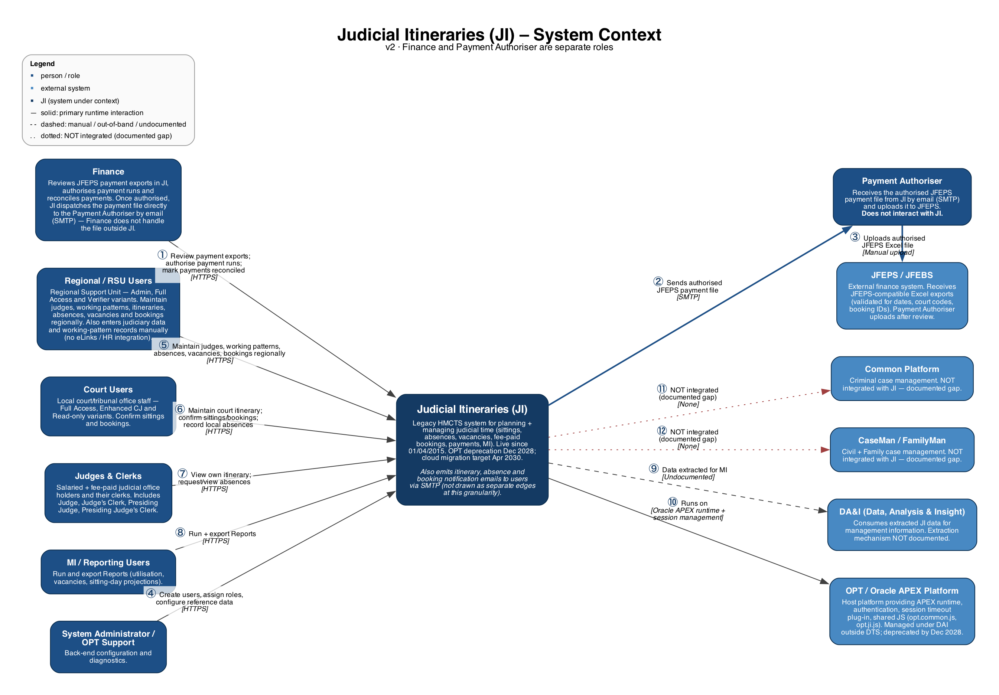

System Context — as-is JI
High-level system context view of the legacy JI (Oracle APEX / OPT) application — actors, external systems, and integrations as they exist before the NJI rebuild. Authoritative source for system-context parity validation during NJI design. Revised version: Finance and Payment Authoriser are shown as separate roles; eLinks, HR / Administrative Records and HMCTS Email have been removed (the first two are not real integrations, the third is pure SMTP transport and is now annotated on the edges). Interactions are numbered sequentially.

Source: docs/architecture/asis/JI-SystemContext2.png